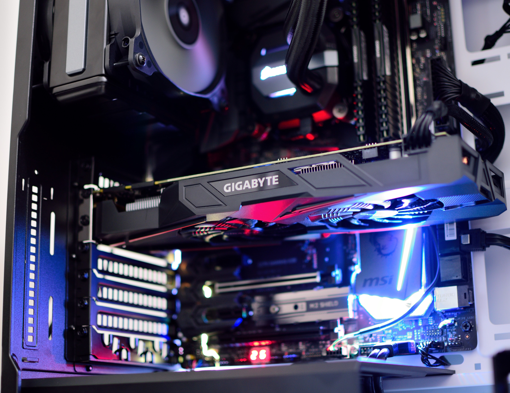

그래픽 카드는
그래픽 카드(Graphics Card)란 CPU의 명령 하에 이루어지는 그래픽 작업을 전문적으로 빠르게 처리하고
디지털 신호를 영상 신호로 바꿔 모니터로 전송하는 장치다. 1990년대까지만 해도 3D 카드라는 이름으로 불렸다.
과거에는 이러한 그래픽 작업도 CPU가 수행하였으나 점차 그래픽 처리에 특화된 전용 장비가 등장하게 되면서
이것이 그래픽 카드로 발전하게 되었고 그러면서 CPU는 자연스럽게 그 자리를 내어주게 되었다. 그래픽 카드는
본디 여러 가지 유닛을 포함한 그래픽 확장 장치를 이르는 말이어서 메인보드에 탑재된 온보드 그래픽이나
CPU 내장 그래픽을 가리키는 용어로 내장 그래픽 카드라고 하면 틀리다. 하지만 편의상 앞의 그래픽 처리
장치도 이 항목에 서술한다.
상술했다시피 CPU 역시 그래픽 카드가 할 수 있는 작업이 가능하다. Windows XP에선 창을 CPU가 렌더링했다.
DirectX는 개발자용으로 CPU 에뮬레이션 기능을 지원한다. 다만 이것은 어디까지나 에뮬레이션이기에 GPU로
하는 것보다 수천 배 느리다. [1]

엔비디아와 AMD(ATI)는 GPU를 설계하고 TSMC, 글로벌 파운드리, 삼성전자 등 반도체 파운드리 업체에
GPU 위탁생산을 하여 ASUS, GIGABYTE 등 그래픽 카드를 제조하는 업체에게 넘긴다. 그래픽 카드 제조사는
그걸 받아서 각종 부품을 기판에 얹어서 그래픽 카드를 만드는 것이다.
한 때 칩셋 제조사가 그래픽 카드까지 같이 만들어 완제품으로 파는 형태가 많았으나 GPU와 그래픽 카드를
따로 만드는 것이 가격 경쟁력 면에서 우수해지고, 외장형 그래픽 카드를 위한 GPU를 설계하는 설계사가
NVIDIA와 ATi만 남게 되면서 완전히 지금의 형태로 정착되었다. 3dfx도 Voodoo 2와 밴시까지는 GPU만
생산하였으나 Voodoo 3부터는 카드까지 직접 생산하였는데, 이를 3dfx 몰락의 원인 중 하나로 꼽고는 한다.
그리고 ATi 역시 과거 AMD에 합병되기 전인 라데온을 내놓기 이전, 즉 Rage 시절까지는 카드도 직접 생산했다.
GPU만 생산하는 걸로 방침을 바꾼 건 RADEON 들어서고 나서다. 이 때 관계자 몇명이 합류해서 나온 게 사파이어 이다.
ATi는 레퍼런스에 대해 Built By ATi 수식어를 붙여 팔았고 비레퍼는 Powered By ATi 수식어로 판매했다. 2D 가속기능,
3D 가속 기능을 장비하면서 CPU에 버금가는 높은 비중을 가진 장비가 되었다.
주요 제조업체는 인텔, AMD(ATI), NVIDIA이며 이 중 점유율 1위는 인텔이다. 특별히 내장 그래픽이 없는 제온 시리즈를
구매하지 않는 경우를 제외하면, 인텔 제품에는 거의 대부분 내장 그래픽을 탑재하고 있기 때문이다. 인텔의 CPU 점유율이 가장
높기 때문에 내장 그래픽을 기본으로 탑재하는 인텔이 그래픽 점유율에서만 1위 이다. 물론 성능에선 AMD, NVIDIA보다 한참 떨어진다.
사무용이나 간단한 웹서핑정도 하는건 크게 무리가 없다. 인텔 내장 그래픽의 성능이 많이 올라왔지만 두 회사의 제품보다는 못하다. 그걸 넘어섰다면 엔비디아와 AMD가 살아남을 수 없다.
Reference. 말 그대로 GPU 설계사가 PCB까지 설계한 그래픽 카드. GPU 설계사가 그래픽 카드까지 통으로 설계한 것이라 현재에는
사실상 특정 GPU 비레퍼런스 제작의 가이드 정도 되는 역할을 한다고 보면 된다. 레퍼런스에는 두 가지가 있는데 하나는 말 그대로
진짜 레퍼런스, 그래픽 카드 문서 제일 위 4번째 사진같이 블로워 팬[2]에 제조사 로고 달고 나오는 것들이고 다른 하나는 PCB는
레퍼런스 설계를 따르되 쿨러만 벤더 자체 쿨러를 얹어 파는 레퍼런스 제품이 있다. 두번째 PCB만 레퍼인 제품들 같은 경우 PCB
설계 비용이 들지 않기 때문에 비레퍼런스 제품들 대비 값이 비교적 저렴하다. 예전에는 그래픽 카드가 대부분 레퍼런스 설계대로
생산한 뒤 쿨러는 잘만, 아틱 등등 쿨링전문 회사들에게 OEM으로 제공받아 판매하는 게 대부분이었다.
레퍼런스
여담이지만 라데온의 사파이어가 바로 ATI의 구 그래픽 카드 제조부분 담당자들이 퇴사하고 만든 회사. 3dfx 망하는거 보고 생산
접었다. 그래서 옛날 사파이어 제품 보면 쿨러가 서드파티 쿨러이고 자체 쿨러가 아니다. 이러한 관계로 AMD의 그래픽 카드와
파이어프로는 지금도 사파이어에서 설계 및 생산을 하는 중이다.
비레퍼런스
영어로는 Non-reference. GPU만 설계사에서 구매한 뒤 벤더들이 PCB를 자체 설계해서 GPU를 얹어 파는 제품들이다. 때문에 같은
GPU를 썼더라도 미미하지만 제조사와 모델 별로 성능 편차가 존재한다. 원가절감 목적으로 설계한 PCB도 있고 고급화를 위해 설계한
PCB도 있기 때문에 구입 시 주의가 필요하다. 미니사이즈 그래픽카드도 여기에 포함된다. 케이스 내부 공간이 좁다면 이런 미니사이즈
카드를 쓸 수밖에 없다. 고급화를 위한 비레퍼의 대표적인 예는 아수스 ROG 최상위 모델들이나, 파워칼라 데빌 13, 게인워드 G.S
같은 제품들이다.